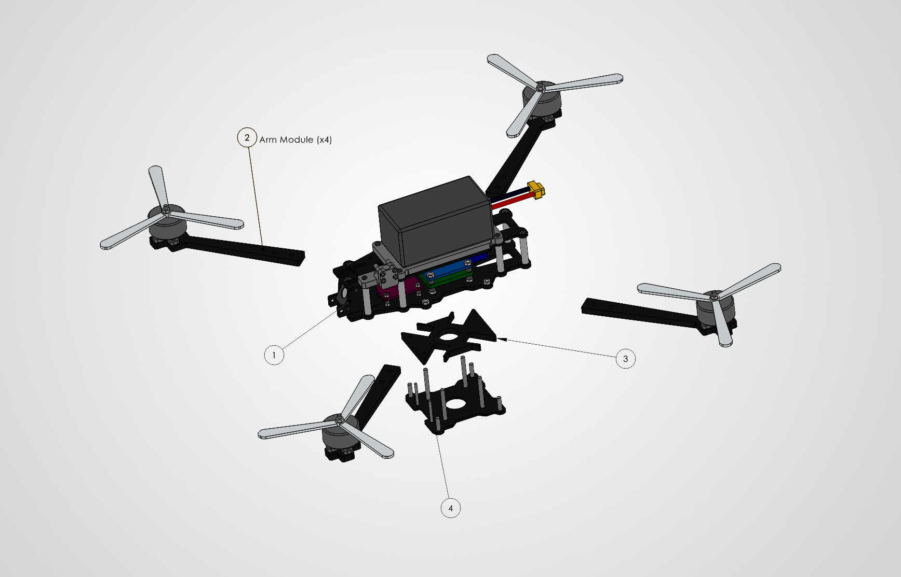

01Problem, Solution & Constraints
The Problem
Most FPV drone frames are designed exclusively around analog video hardware. Accommodating a digital HD system like the DJI O4 Air Unit on these frames typically requires bulky 3D-printed camera mounts, which shift the center of gravity too far forward and compromise the weight distribution needed for responsive freestyle flight. Frame designs also tend to trade durability for weight savings, or vice versa, rather than optimizing for both.
The Solution
A custom 5-inch FPV frame, designed, modeled, FEA-validated, and CNC-manufactured, that natively houses both traditional analog FPV hardware and the DJI O4 Air Unit without 3D-printed adapters, while optimizing weight distribution for responsive freestyle flight and validating structural durability through iterative design and finite element analysis.
Constraints
- Bare frame mass less than 150g, to preserve a powerful thrust-to-weight ratio
- Must natively house the DJI O4 Air Unit without additional 3D-printed mounting hardware
- Must withstand high-G impacts typical of freestyle flight crashes (verified under a 20G structural load simulation)
02Evolution of Design
Two parts carried the design through multiple iterations. The bottom frame plate evolved to solve the DJI O4 packaging problem directly; the arm-to-frame joint evolved to solve the durability problem.
Bottom Frame — Packaging & Native O4 Mounting


Arm-Lock Joint — Motion & Stress Control


03Structural Validation (FEA)
Isolated sub-study of the arm and arm-lock joint only, the specific feature redesigned above. Fixed at the arm's mounting holes; a 20G equivalent crash load (6.8N) applied at the motor-mount face, representing a hard but survivable freestyle impact.


Result: Factor of Safety ≈ 87. This margin is high by design, driven by the manufacturability constraint of using standard 2/3/5mm stock thicknesses, not by pure weight optimization. A thinner layup would have reduced this margin and saved some weight, but required non-standard stock and added CNC cost, for no meaningful gain given that the finished frame comes in at 117g, well under the 150g ceiling.
04Mass Properties & DFM
The principal mass moments of inertia below are what the weight distribution claim in the Solution is actually built on; they directly determine roll/pitch/yaw control authority and PID-tuning behavior. These values were used as an initial gain input for pitch and roll, since both are actuated similarly, and as a general guide for balancing PID response across all three axes, including yaw, which is actuated differently and tuned by feel.
Design for Manufacturing (DFM)
05Assembly & Bill of Materials

Bill of Materials
| # | Part | Description | Qty |
|---|---|---|---|
| 1 | bottom_frame_module | Central Frame Subassembly | 1 |
| bottom_frame_v5 | Bottom carbon fiber frame plate | 1 | |
| camera_plate_v3 | Camera side plates | 2 | |
| esc | Electronic speed controller | 1 | |
| fc | Flight controller | 1 | |
| top_plate_v4 | Top carbon fibre plate | 1 | |
| m3_10mm | Socket head screw | 20 | |
| capacitor | Low-ESR capacitor | 1 | |
| battery_tpu_mount | 3D printed battery mount | 1 | |
| 6s_battery | 6S 1350mAh LiPo | 1 | |
| m3_grommets | Rubber dampening grommet | 8 | |
| m2_grommets | Rubber dampening grommet | 4 | |
| DJI O4 Air Unit | Digital HD video system | 1 | |
| 2 | arm_module | Motor + arm assembly | 4 |
| 3 | arm_slot_v6 | Central carbon fibre arm lock | 1 |
| 4 | bottom_supporting_plate_v2 | Lowest carbon fibre plate | 1 |
| m3_10mm | Socket head screw | 4 | |
| m2_16mm | Socket head screw | 2 | |
| m3_30mm | Socket head screw | 4 | |
| m2_nut | Hex nut | 8 | |
| m2_6mm | Socket head screw | 4 | |
| m2_10mm | Socket head screw | 4 | |
| 25mm_standoff | Aluminum standoff | 8 | |
| m3_nut | Hex nut | 12 |
06Physical Reality & Systems Integration
Taking the project from digital design to a real, flying machine: CNC-manufactured carbon plates, soldered electronics, and Betaflight/ESC configuration.

RF & flight software: RadioMaster TX16S Mk3 running EdgeTX and ExpressLRS; PID and filter parameters in Betaflight were tuned to match the airframe's measured mass moments of inertia (Section 04).

07Flight Validation
Ground-view footage of the first test flight.